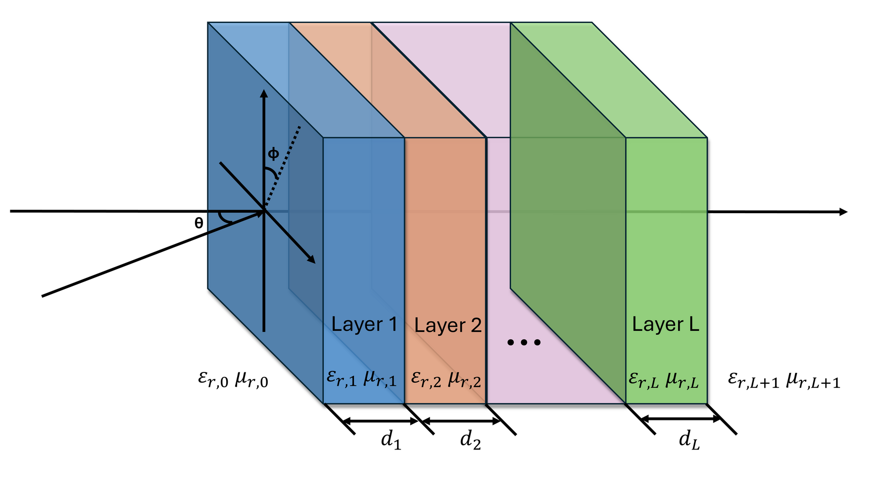
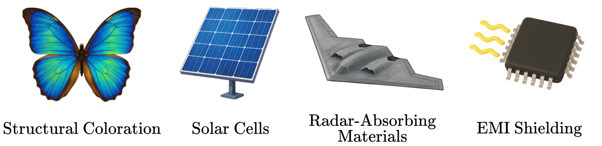

Lightweight and efficient
Runs rapid TMM calculations without the overhead of large commercial tools.
✨ Open-source differentiable TMM simulator
A JAX-based differentiable optical and radio frequency simulator for multilayer structures.
University of Pittsburgh | *Equal contribution
pip install jaxlayerlumos
Overview
JaxLayerLumos is open-source transfer-matrix method software for scientists, engineers, and researchers in optics, photonics, RF, and microwave design. Define refractive indices, layer thicknesses, frequency vectors, and incidence angles, then calculate reflection and transmission with a lightweight JAX workflow.

Features
Runs rapid TMM calculations without the overhead of large commercial tools.
Calculates gradients over variables involved in reflection and transmission.
Handles optical, infrared, microwave, and radio-wave simulation settings.
Includes optical properties and RF parameters for common metals and dielectrics.
Uses JAX to support GPU and TPU execution for suitable workloads.
Open-source code, documentation, examples, tests, and contribution guidelines.
Comparison
| Capability | Ansys Optics | TMM-Fast | tmm | JaxLayerLumos |
|---|---|---|---|---|
| Lightweight | No | Yes | Yes | Yes |
| Gradient support | No | Yes | No | Yes |
| GPU / TPU support | No / No | GPU only | No / No | GPU + TPU |
| Position-dependent absorption | No | No | Yes | Yes |
| Radio wave simulations | Limited | No | No | Yes, with magnetic materials |
| License | Commercial | MIT | BSD-3-Clause | MIT |
TPU results may show reduced numerical precision because TPUs are optimized for low-precision computation.
Examples
The examples directory covers practical use cases from thin-film color exploration to solar cells, RF radar design, and gradient-based optimization.

Developer workflow
Install from PyPI or from source with optional extras.
pip install jaxlayerlumos
pip install .
pip install .[dev]
pip install .[benchmarking]
pip install .[examples]Install development requirements, then run the test suite locally. The project also uses GitHub Actions.
pip install .[dev]
pytest tests/Benchmarking compares JaxLayerLumos with Ansys Optics, TMM-Fast, and tmm.
Read comparisonsIssues, enhancements, and pull requests are welcome through the project guidelines.
View guidelinesSupported materials
Materials are specified using complex refractive indices or complex permittivities and permeabilities, with optical data from literature or user-provided measurements.
Open MATERIALS.md🤖 Declaration of Large Language Model Usage
This project was initiated before large language models were incorporated into its development workflow. They are now used to support code revision, feature development, software maintenance, and text editing. In particular, we use Codex as an AI coding tool. All AI-assisted changes remain subject to author review and project maintenance standards.
Citation
@article{LiM2025joss,
author={Li, Mingxuan and Kim, Jungtaek and Leu, Paul W.},
title={{JaxLayerLumos}: A {JAX}-based Differentiable Optical
and Radio Frequency Simulator for Multilayer Structures},
journal={Journal of Open Source Software},
volume={10},
number={114},
pages={8572},
year={2025}
}Software Contributors
The Journal of Open Source Software paper author list is fixed at publication. This section recognizes software contributions to the project.
Acknowledgments
We sincerely thank all contributors and users for their support and feedback. This work is supported by the Center for Materials Data Science for Reliability and Degradation (MDS-Rely), an IUCRC of the National Science Foundation. The University of Pittsburgh, Case Western Reserve University, and Carnegie Mellon University are participating institutions in MDS-Rely.